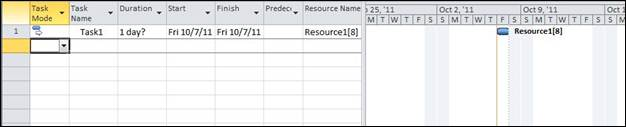

Assignments are used to bind the task and resources. Project class exposes Assignments collection that represents the list of all the Assignment objects in a project. This property can be used to add assignment.
The code below shows adding assignments to a project:
|
[C#]
// Creating an instance of the Project Project project = new Project();
// Creating a task Task task = new Task(); task.Name = "Task1";
// Adding the task to project project.RootTask.Children.Add(task);
// Calculating Task ID project.CalculateTaskIDs();
// Creating a resource Resource resource = new Resource(); resource.Name = "Resource1";
// Adding resource to project project.Resources.Add(resource)
// Calculating Resource ID project.CalculateResourceIDs()
// Creating an instance of Assignment Assignment assignment = new Assignment(); assignment.UID = 1;
// Assigning resource to task assignment.Task = task; assignment.Resource = resource;
// Adding resource to project project.Resources.Add(resource); |
|
[VB]
' Creating an instance of Project Dim project As Project = New Project()
' Creating an instance of Task Dim task As Task = New Task() task.Name = "Task1"
' Adding the task to project project.RootTask.Children.Add(task)
' Calculating Task ID project.CalculateTaskIDs()
' Creating an instance of Resource Dim resource As Resource = New Resource() resource.Name = "Resource1"
' Adding resource to project project.Resources.Add(resource)
' Calculating Resource ID project.CalculateResourceIDs()
' Creating an instance of Assignment Dim assignment As Assignment = New Assignment() assignment.UID = 1
' Assigning tasks and resource to assignment assignment.Task = task assignment.Resource = resource
' Adding an assignment to a project project.Assignments.Add(assignment) |
The project created using the above code will look as shown in the following Microsoft Project screenshot.
